Lessons / Options, earnings and volatility
The Wheel Strategy, Automated: A Python Options Bot That Picks Its Own Stocks (Alpaca Paper Trading)
The wheel strategy, run by a plain Python program on an Alpaca paper account: sell a cash-secured put, take assignment, sell a covered call, get called away, and start again. The bot picks its stocks two ways - your own list, or a screen of filters such as market cap from the SEC's share counts and RSI oversold - ranks each stock's put near a 0.30 delta by what it pays for the cash it ties up, and sells the best one. Then a covered call on shares it holds, and every later turn decided from what the account holds: take profit at half, roll near expiry, start again. Write your own filter in one function. For beginners learning the wheel and for traders who want to automate their own rules. For education only, not financial advice.
Prices and numbers are as of the video's publication, October 28, 2026.
The code for this lesson: github.com/nexusfissioncode/algo-trading/tree/main/wheel-bot
Where we are Watch from 0:46
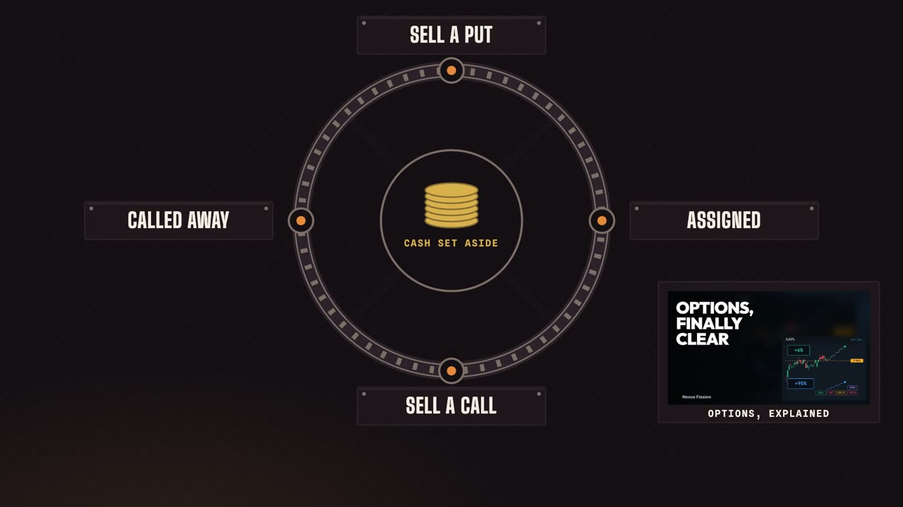
If puts and calls are new to you, the options video explains them from nothing. You will not need it to follow this one, though: every idea is explained again as it comes up.
How the wheel turns Watch from 0:57
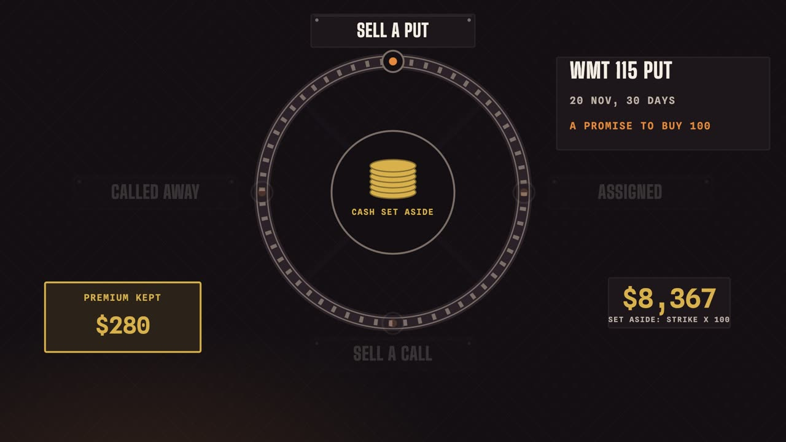
Start at the top. You sell a put: a promise to buy 100 shares of a stock, at a price called the strike, if the buyer asks before the put expires.
For that promise the buyer pays you a premium, and it is yours to keep whatever happens. In the list run you will see later, Walmart's $115 put, a month out, paid $280.
It is called cash-secured because you set aside the money to buy those shares: the strike times 100. For this put, $11,500 waits in the account.
Then, by expiry, one of two things happens. If the stock stays above the strike, the put expires worthless. You keep the premium, the cash is free again, and you sell another, round and round the top of the wheel, for as long as the stock behaves.
If the stock ends below the strike, you are assigned. At expiry, Alpaca exercises any option that ends at least a cent in the money.
You buy the hundred shares at the strike, with the cash you set aside, so you own the stock now, at the strike, less the premium you were paid.
Next, you sell a call on those shares: a promise to sell them at a strike, at or above what they cost you. It is covered because you own them, and it pays another premium. If the stock stays below the strike, the call expires, and you sell another.
If the stock rises above it, your shares are called away: sold, at the strike. They turn back into cash, and you are back at the top, ready for the next put. That is one full turn.
Two risks come with it, and they are real. If the stock keeps falling after you are assigned, you own shares worth less than you paid. The premium only softens it: the Options Industry Council calls the most a cash-secured put can lose limited but substantial.
And if the stock shoots up, the call caps your gain at its strike. In the council's words, the call caps the stock's upside potential. The wheel trades the big wins for steady premium.
The bot's rules Watch from 2:56
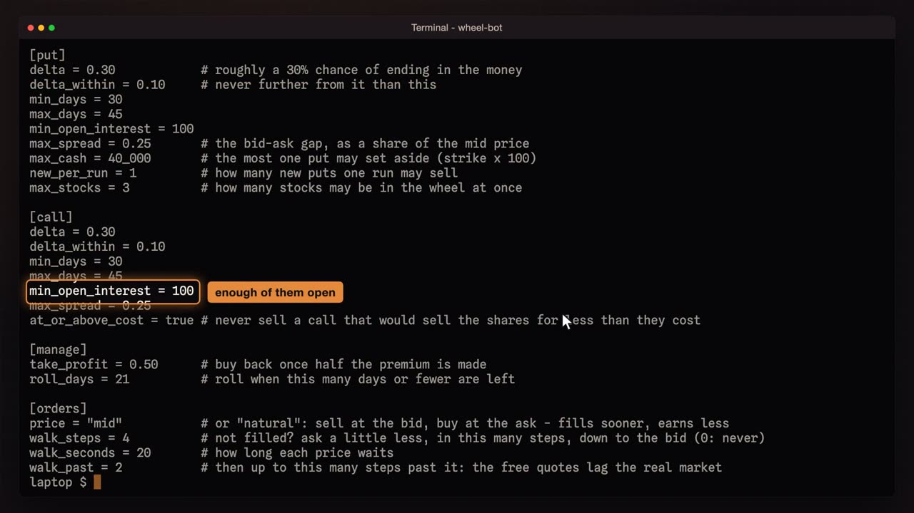
The bot turns the wheel by rules, and every one is a line in its settings file. Here is its second half.
The delta to aim for, and how far from it the bot may go.
30 to 45 days left until the option expires.
At least 100 contracts already open, so there are traders on the other side.
And a bid and an ask no more than a quarter of their middle price apart.
So which put? Every stock has a ladder of them, one strike after another. Further down the ladder, the premium is smaller, and so is the chance of being assigned.
Delta is a rough guide to that chance. Selling a put with a delta of about 0.3 means, very roughly, a 70% chance it ends out of the money, and you just keep the premium.
The bot looks for the put closest to 0.3, 30 to 45 days out, and skips any that hardly anyone holds, or whose bid and ask are far apart. That is why Walmart's 113 and 114 lost to the 115.
The most cash one put may set aside: $40,000 here, so a stock at $500 a share is out of reach.
Take profit once half the premium is made, and buy it back.
And roll with 21 days or fewer to go. Under them, how it prices an order, which comes later. First, what those two mean.
Then, on every run, it checks what it has already sold. Once a put or a call has made half its premium, it buys it back and frees the cash, rather than wait weeks for the last few dollars.
With three weeks or less to go, it rolls: buys this one back, and sells the next one further out. Every one of these numbers is a line in the settings file, and they are placeholders to learn with, not advice.
And here are those rules in the code itself: a few lines that decide what to do with anything already sold.
Once half the premium is made, it buys the option back.
With three weeks or less to go, it rolls to a later one.
Every run starts by reading the account. This one sells nothing new, and only looks.
Nothing is in the wheel yet. That line comes from the account, every time, not from anything the bot wrote down.
And the bot keeps no notes of its own. Each run asks the account what it has sold and what it holds, and works out from that where each stock is on the wheel.
That matters, because Alpaca does not send assignments over its live stream, and on a paper account they show up in the activity list only the next day. What the account holds is always right, so that is what the bot reads.
Picking the stocks Watch from 5:29
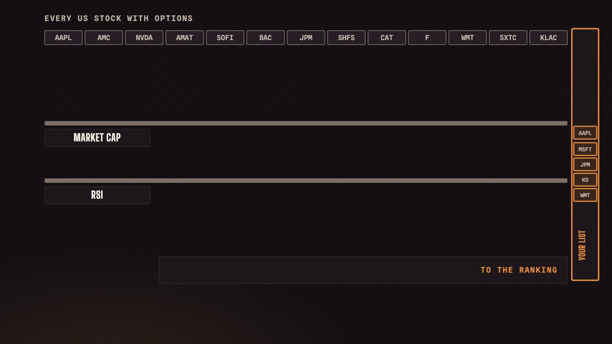
Now the other half: which stocks get a put at all. There are two ways, and the same code takes either.
Your own list: the stocks you would be glad to own, written in the settings file. They go straight to the ranking.
Or a screen: start from every stock on Alpaca that has options, and let filters, one after another, narrow it down.
The first filter is size. Market cap is what a company is worth on the market: the number of its shares, times the price of one.
The price comes from Alpaca. The share count comes from the SEC, the American market regulator, which publishes a file for each quarter with one number for every company that filed.
Two catches, both handled in the code. A foreign company reports its own shares, not the ones traded here, and one Toyota share traded here stands for ten of its own, so the screen keeps American companies. And the SEC asks every program to say who is calling, so you put your name in the settings file.
Here is that arithmetic for a few stocks, with a small helper from the folder.
The SEC files give share counts for nearly 5000 American tickers.
Walmart: the share count from its latest filing, times the price, comes to $934,000,000,000.
Alphabet counts its two share classes apart on the cover page, so the code uses the quarter's average count instead: just over 4,000,000,000,000.
And Toyota has no American share count here, so it is left out.
The second filter is RSI, the relative strength index. It compares a stock's recent gains with its recent losses, on a scale from nothing to 100, smoothed over 14 days.
Under 30 is called oversold: it has fallen hard and fast. For the wheel that is an idea to test, not a rule. A stock that just dropped pays a richer premium on its put, and carries more risk with it.
Whatever the picker leaves, the bot finds each stock's put near 0.3, and ranks them by one number: the premium divided by the cash it sets aside, turned into a yearly rate, because the expiries differ.
The top of the list gets the put. One new put per run, and never more than three stocks in the wheel at once, unless you change the settings.
Getting ready Watch from 7:42
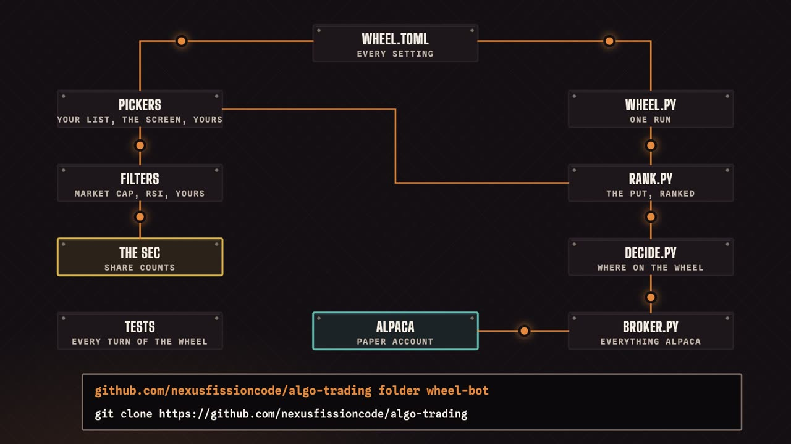
The code is on GitHub, in the channel's repository, in the folder called wheel-bot. By the time you are watching this, it is there to clone with one line.
Here is that folder as a map. The settings file feeds two halves. On the left, the pickers and their filters choose the stocks. On the right, one run reads the account, ranks the puts, decides each stock's next step, and talks to Alpaca through one file.
And the tests check every turn of the wheel without touching the broker. It is plain Python, with no AI anywhere in it.
You need an Alpaca account, and its paper account: pretend money, real prices, the same programming interface as real trading.
This one is a paper account, and the name of the account says so, in plain words.
The keys are made here, on the home page. Regenerate shows a new pair once: copy both into your environment, and never into a file you share.
In a terminal, in that folder, here is what is in it.
The settings file, the program itself, the code for the broker and the ranking, and the tests.
The filters, one small file each, with the pickers beside them.
One command installs everything it needs: uv reads the project file and sets up Python and the packages in the folder.
Installed. Then the keys: your Alpaca paper keys go into the environment, never into a file you share, and so does your name for the SEC. This demo sends the program's name.
This line checks they are set without printing them. Both paper keys, and the name for the SEC, are there.
Your own list Watch from 9:18
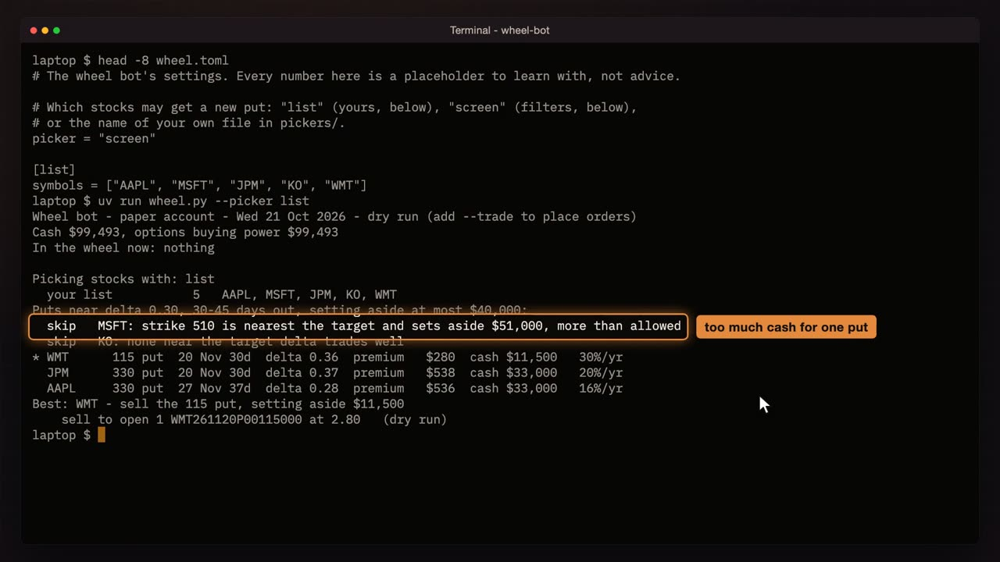
First, your own list. Here is the top of the settings file.
The picker line says which way to pick. It is set to the screen, and one word on the command line changes that for a single run.
Your list is one line: Apple, Microsoft, JPMorgan, Coca-Cola and Walmart.
So, run the wheel, picking from the list.
Without the trade flag it is a dry run. It reads the account and the prices, decides, and prints what it would do, but sends nothing.
Your five stocks, just as they are written in the file.
Two are skipped, each with its reason. Microsoft's put near 0.3 would set aside $51,000, more than the 40,000 the settings allow. Coca-Cola had nothing near the target that trades well.
The rest are ranked by what they pay for a year. Walmart's put comes first, with its star: the one this run would sell.
Walmart, the $115 put, setting aside $11,500. And the order it would send, at the middle of the bid and the ask.
Here is that run drawn out. On the left, Walmart's ladder: the put nearest 0.3 that enough people hold is the 115.
On the right, the race. Walmart pays about 30% a year for the cash it ties up, JPMorgan 20, Apple 16. Walmart wins, and that is the put it would sell.
The screen Watch from 10:40
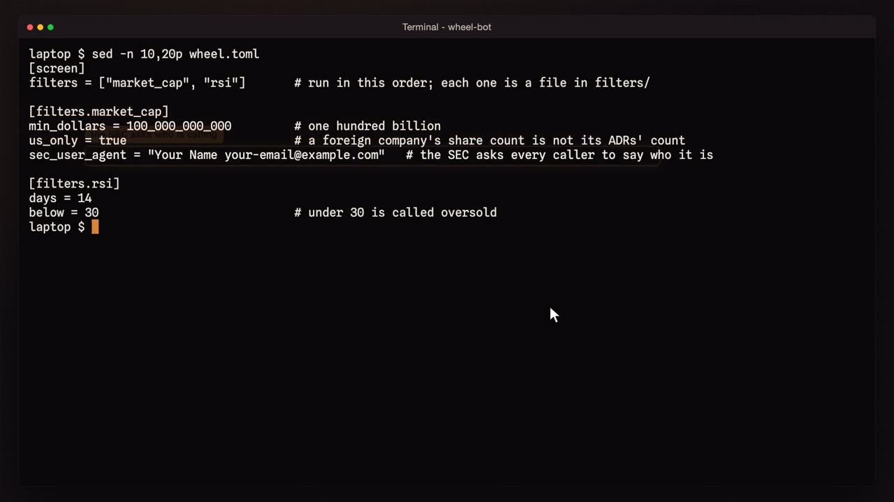
Now the screen. Here is its part of the settings file.
The filters to run, in order: market cap, then RSI. Each name is a file in the filters folder.
A market cap of at least $100,000,000,000, written out in full.
Your name and email for the SEC go here, or in the environment, as in this demo.
And RSI under 30, which is called oversold.
Run it, with the screen as the picker. It downloads the share counts once a day and keeps them.
It starts from every stock with options on Alpaca, over 6000 of them.
Market cap leaves the 108 worth more than $100,000,000,000.
And RSI under 30 leaves six. Four of them have no put near the target that trades well, so they are skipped.
Applied Materials comes first. Its $355 put, a little over a month out, pays about $1,500, about 43% a year for the cash it ties up.
So that is what it would sell, setting aside $35,500. Next, a look at the same stock on TradingView.
Here is what just happened, drawn out. Every stock with options falls onto the first filter, and the small companies stop there.
The big ones fall on to the second, and only the oversold ones stay lit. The ranking picks one of them, and its put.
You can check the pick by eye. Here is Applied Materials on TradingView: the price, day by day.
And under it, its RSI, down under 30: oversold. Now the options on this stock, on the same site.
Then its option chain, for the same expiry: the puts, one row for each strike.
This is the put the bot chose, the 355. Its bid and its ask, and how many are open: enough to trade.
And its delta, about 0.31, the nearest to 0.3. The bot reads the same numbers from Alpaca's chain, and picks this row.
Now the same run with the trade flag, while the market is open.
Its first line says trading, on the paper account.
The same screen runs, and it comes to the same pick.
And the order goes out: sell to open, one contract, with a limit at the middle of the bid and the ask.
No buyer in 20 seconds, so it asks a little less, and again, reading the quote each time.
Filled, at $13.20 a share: $1,320 of premium for the one contract.
Run it again without new puts, only looking after what it already has.
Applied Materials is in the wheel now, with 36 days left. The price moved since the sale, so for now the put would cost more to buy back than it paid, and the bot just holds it.
And there is the order at the broker, in the paper account.
Here is that walk, drawn out. An option has two prices: the bid, the most a buyer will pay right now, and the ask, the least a seller will take. The bot asks for the middle.
If nothing fills in 20 seconds, it reads the quote again and asks a little less, in steps, down to the bid. The settings file says how many steps, and how long each one waits.
It may go a step or two past the bid, too. The free quotes a program gets are, in Alpaca's words, not actual quotes from the official feed, only indicative ones. And on paper, a sell order fills only once its price is at or below the best bid. If it still does not fill, it stays up for the day, and the next run sees it.
Your own filter Watch from 14:06
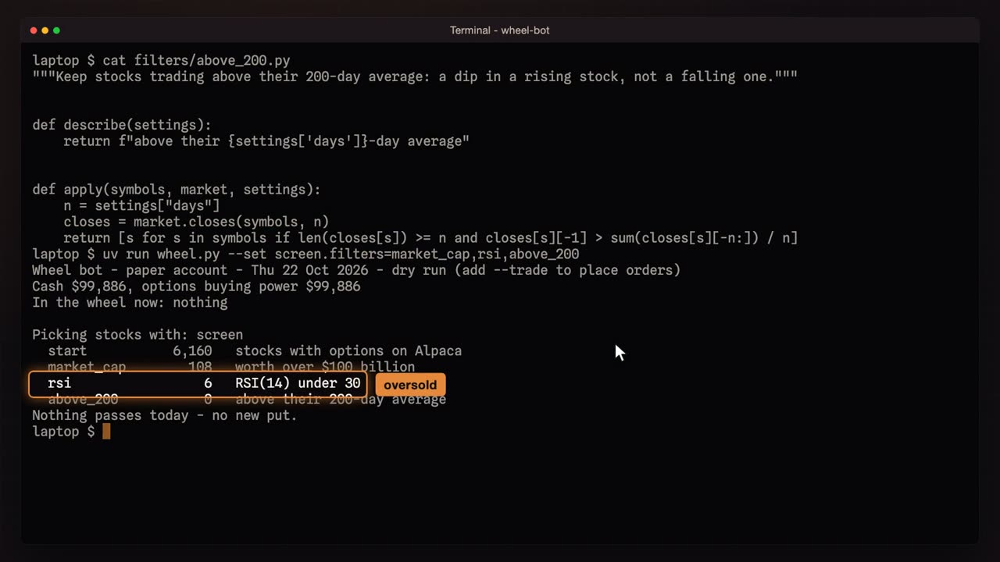
Your own rule is one small file. This one keeps stocks above their 200 day average: a dip in a rising stock, not a falling one.
One function. It gets the stocks so far, the market data, and its own settings.
And it returns the ones it keeps. That is all a filter is.
Add its name to the list of filters. Here it is done for one run, on the command line.
Oversold leaves the same six as before, the same oversold stocks.
And above its 200 day average leaves none. A stock that has just fallen hard is rarely still above its long average, so nothing passes today, and the bot sells nothing.
So loosen one rule: RSI under 40 instead of 30.
More stocks pass the RSI filter this time: 28.
Your own filter keeps nine of them, the ones still above their average.
And a different stock wins: Arista Networks, and its $165 put.
On the drawing, your filter is one more bar, wherever you put it in the list.
A sector, a price range, how far a stock has fallen: anything you can work out from the market data can be a filter. Write the function, add its name, and run it dry first.
The call side Watch from 15:19
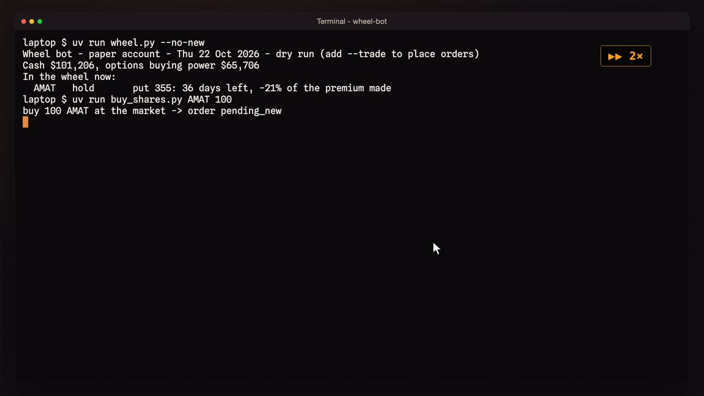
The call side needs shares, and an assignment cannot be made to happen on cue. So, to practise, this buys 100 shares of the same stock at the market. It stands in for an assignment, which would leave the same hundred shares in the account.
The helper that does it is in the folder too, for practice only: 100 shares of Applied Materials.
A market order goes out to the paper account, at whatever price the market has.
Filled. The next run of the wheel sees the shares.
Run the wheel again, for real, still with no new puts.
It sees the shares: 100 of them, and no call covering them yet.
And it refuses. Every call near 0.3 has fewer than 100 contracts open, so it holds the shares and sells nothing. That is the rule doing its job.
To see the rest, loosen that one rule, for this run only: 20 open contracts will do. The settings file still says 100.
Now a call passes: the 420, above what the shares cost, with a delta of about 0.33, a month out, for about $1,320.
Sent, at the middle price. Then the walk: no buyer, so it asks a little less, step after step. Six prices, and still no fill, so the order stays up for the day, and the next run sees it.
Now TradingView, in the browser: the same stock, a little later in the day.
The price, day by day, and under it the RSI over 14 days, the same measure the screen used. Then, to see why no buyer took the order, open the option chain for Applied Materials.
And its calls this time, for the same expiry as before.
Here is the 420 the bot chose. Its bid and ask are far apart, and only 43 are open. The bid here is $11.40, below the 11.86 the bot last asked, so no buyer took it.
Its delta, about 0.33: near the target. Last, the paper account's orders at Alpaca, to see what became of that order.
And at the broker, the call order, still open, at the price it walked down to.
On the wheel, that was the right-hand side: shares in the hub, and a call offered on them.
No premium arrives until a buyer takes the call. If the order ends the day unfilled, the next run reads the account, sees the shares still uncovered, and offers a call again. From here the bot does the rest on its own, run after run.
Every run after Watch from 17:41
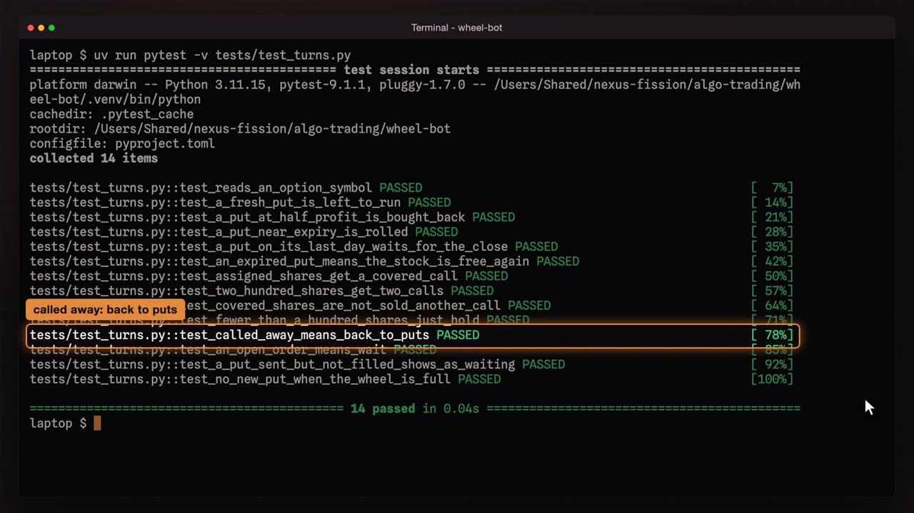
What happens on later runs depends on the market, so the tests show it instead, on made-up positions, without touching the broker.
A put that has made half its premium is bought back.
One with three weeks or less to go is rolled.
An expired put frees the stock for a new one.
Shares from an assignment get a covered call sold on them.
Shares that are called away mean it goes back to selling puts.
Every turn of the wheel passes its test.
Then the rest: the ranking, the filters, the share counts, the settings.
All of them pass, every single one.
Put together, that is the whole wheel, every station tested.
Each run, the bot looks at the account, finds where each stock is, and takes the next step.
Running it every day Watch from 18:24
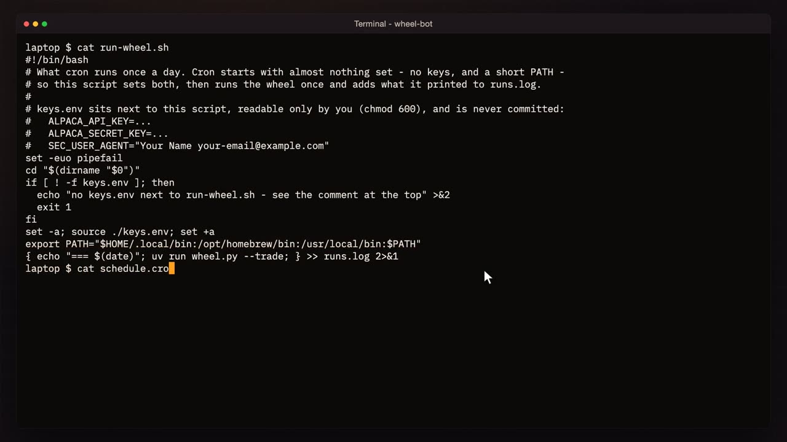
To run it every day, the folder has a small script for a scheduler to call.
A scheduled job starts with almost nothing set, so the script reads your keys from a file only you can read.
Then it runs the wheel once, for real, and adds what it printed to a log you can read later.
And here is the one line for cron, the scheduler built into Mac and Linux.
Every weekday at seven in the morning, Pacific time, half an hour after the market opens in New York. Your computer has to be awake for it.
A laptop sleeps, though. The same code runs unchanged on a small always-on server: two earlier videos set one up for free on Google Cloud, and run jobs on a schedule there, with the keys kept on the server.
If you trade at Interactive Brokers, ThetaGang is a well known open-source wheel bot built for it, and worth reading.
The code for this one is on GitHub, in the folder wheel-bot. Change the settings, write your own filter, and run it dry until you trust what it says. This is for education only, and not financial advice.